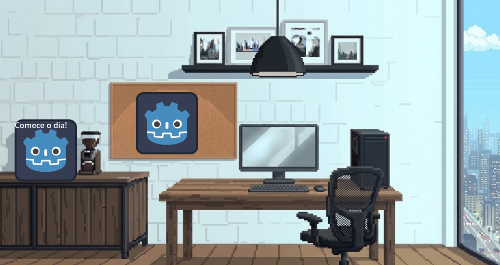
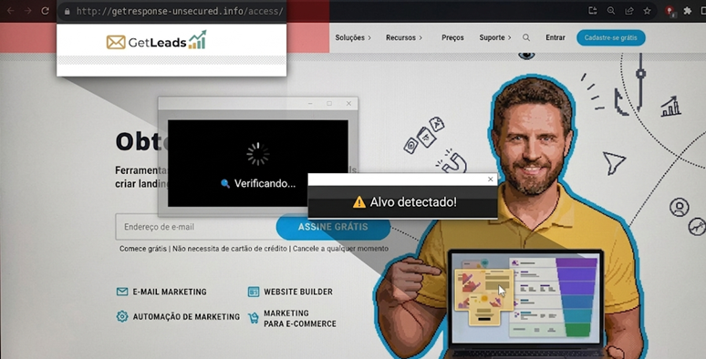

Projetos de Programação
Desenvolvimento de exercícios e aplicações voltadas para:
- Lógica de Programação
- Consultas SQL
- Estruturas de Dados
- Integração com APIs
- Web Scraping
- Estatísticas
Tecnologias Utilizadas
- Python
- Java
- SQL
- HTML
- CSS
- JavaScript
Projeto de Extensão - Netetive
Atualmente participo, em grupo, de um projeto de extensão do curso de Engenharia de Software voltado para educação e aprendizagem em cibersegurança.
O projeto consiste no desenvolvimento de um jogo chamado Netetive, onde o jogador assume o papel de um agente de cibersegurança responsável por identificar vírus, hackers e golpes em sites, aplicativos e mensagens.
O objetivo é promover a conscientização sobre segurança digital de forma interativa e educativa, alinhada aos Objetivos de Desenvolvimento Sustentável (ODS). O jogo está sendo produzido na Godot Engine.
Primeiro protótipo do projeto:

Exemplos de "golpes" que aparecem no jogo que o jogador terá que identificar:
